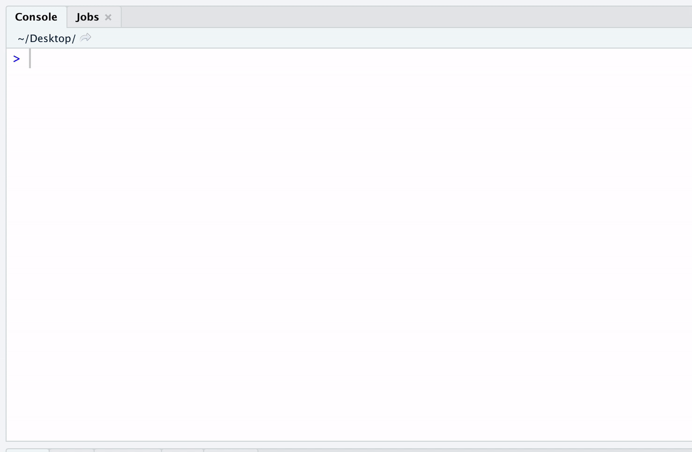

install.packages(
c("postcards", "usethis", "gitcreds")
)Project 0 (optional)
project 0
projects
Information for Project 0 (entirely optional, but hopefully useful and fun!)
This project, as the rest of the course, is adapted from the version Stephanie C. Hicks designed and maintained in 2021 and 2022. Check the recent changes to this file through the GitHub history.
Background
Due date: September 8th at 11:59pm
Using the tools we learned in the first week (e.g. R, RStudio and Github). Let’s apply them in a small (but also comprehensive) exercise.
Please note this project is entirely optional (i.e. it will not be graded), but hopefully it will be helpful to you getting set up for the rest of the course (i.e. set up these tools on your computing environment) and give you an opportunity to introduce yourself to your classmates.
For those of you who are new to GitHub/R/Rmarkdown: this project makes you do a lot of things that you might not be familiar with. I know that this might be time-consuming and also might feel a bit intimidating. It’s partly unavoidable and partly on purpose. You need to learn how to quickly get up to speed with all kinds of new tools that come your way. So practicing it is a good idea. You are welcome to draw on any sources for help that you want (online, classmates, instructor, etc.). I’m confident with a bit of trial and error you’ll get it to work.
R package dependencies
You will likely need to install these R packages:
You will also need to have installed Git on your computer. Follow https://happygitwithr.com/install-git for more detailed instructions depending on your operating system.
Part 1
This part of the project is to ensure that you have successfully set up your computing environment. Please email (use the Subject line: 140.776 Setup) the Course Instructor (Dr. Leonardo Collado Torres) at lcollado@jhu.edu the following information:
Setting up your computing environment
Your name, JHED ID (if applicable).
The type of computer/operating system you are using (Windows, Mac, Unix/Linux, other)
The version of R that you have installed on your computer. To do this, start up R and run the following in the R console and include the output in your email.
print(R.version.string)
- The version of RStudio that you have installed on your computer. To do this start up RStudio and in the R console window, run the following and again include the output in your email:
print(RStudio.Version()$version)If you have a GitHub username, please include this in your email. If you do not have a GitHub username, read https://happygitwithr.com, sign up for GitHub, and include your new username in your email to me.
To make sure git is installed on your system, use the ‘Terminal’ (e.g. it’s next to the R Console within RStudio1) (or whatever you use), run the following and include the output in your email:
For example, this is mine:
git --versiongit version 2.45.1If you have any trouble with any of the steps above, try to first post on the discussion board on CoursePlus. The TAs and I will be checking it frequently, but other students may also be helpful in their replies. You can also use other resources to get help (Google, R4DS, colleagues/friends/relatives with R/Markdown experience, etc.). Still, try to do as much as possible yourself. We will use all the bits you are learning here repeatedly during this course.
Part 2: make a website using usethis and postcards
This part of the project is to help you introduce yourself (and your interests!) to others in this course. You will create a new GitHub repository and build a small website about yourself.
1. Create an RStudio project for your website
Use usethis::create_project() or in RStudio go to File -> New project and create a project with the name <YourGitHubUsername>.github.io. That is a very specific name used by GitHub Pages https://pages.github.com/.
## My GitHub username is "lcolladotor", so this would create the RStudio project
## on my Desktop
usethis::create_project("~/Desktop/lcolladotor.github.io")If you already have a GitHub repository with that name, then choose the following name: biostat776-intro-<firstname>-<lastname> (where you replace <firstname> with your first name and <lastname> with your last name) in your own personal GitHub account.
usethis::create_project("~/Desktop/biostat776-intro-Leonardo-ColladoTorres")usethis::create_project() will create a new RStudio window for your website project.
2. Create a local Git repo for your RStudio project
We will use utilities from usethis to link our RStudio project to GitHub. Assuming that you already have Git installed in your computer (see https://happygitwithr.com/install-git for detailed instructions on how to install Git), on your RStudio project you made on step 1 above type this on your R console: usethis::use_git(). This will run git init behind the scenes and setup a Git repository on your computer. On your R console you will get asked if it’s OK to restart RStudio. Say yes, as that will now enable the Git panel in RStudio, which will make your life easier later on.
usethis::use_git() ## Choose the option to make the commit, then to restart RStudio
## If you don't have git installed, you will likely benefit from reading
## "Happy Git and GitHub for the useR" at https://happygitwithr.com/.Here’s the output and selections I made in my case. Note that the prompts and options will change randomly every time you run this function, so you do need to read them carefully!
usethis::use_git()
✔ Setting active project to '/Users/leocollado/Dropbox/Mac/Desktop/biostat776-intro-Leonardo-ColladoTorres'
✔ Initialising Git repo
✔ Adding '.Rhistory', '.Rdata', '.httr-oauth', '.DS_Store', '.quarto' to '.gitignore'
There are 2 uncommitted files:
* '.gitignore'
* 'biostat776-intro-Leonardo-ColladoTorres.Rproj'
Is it ok to commit them?
1: Not now
2: Yup
3: Negative
Selection: 2
✔ Adding files
✔ Making a commit with message 'Initial commit'
• A restart of RStudio is required to activate the Git pane
Restart now?
1: Absolutely not
2: No
3: For sure
Selection: 3At the end, my RStudio window was restarted.
Note that you might get an error like this one:
✔ Adding files
✔ Making a commit with message 'Initial commit'
Error in libgit2::git_signature_default :
config value 'user.name' was not foundIf that’s the case, that means that you have to configure your computer to know who you are when you are using git and thus GitHub. We can do this with usethis::edit_git_config() which will open your ~/.gitconfig file. There we can configure Git so it knows who we are. For name I’m using my GitHub username, and for email, I’m using the email I used for my GitHub account. Note that there are 4 spaces before name and email, as well as an empty line in the end.
[user]
name = lcolladotor
email = lcolladotor@gmail.com
Alternatively, you can use git commands directly or the usethis::use_git_config() function as documented at https://happygitwithr.com/hello-git.html?q=config#hello-git.
3. Use the gh-pages branch
GitHub provides websites for free to Git repositories they host if you use a specific Git branch name: gh-pages. While there are more configuration options available through GitHub, the easiest option is to use the gh-pages branch, which we can do with R thanks to usethis::git_default_branch_rename() as shown below:
## After the restart, we next need to change the default Git branch to "gh-pages".
## This will make our lives a bit easier later on, as this specific name is used by
## GitHub pages https://pages.github.com/ for websites.
usethis::git_default_branch_rename(to = "gh-pages")This was the output for me:
usethis::git_default_branch_rename(to = "gh-pages")
✔ Setting active project to '/Users/leocollado/Dropbox/Mac/Desktop/biostat776-intro-Leonardo-ColladoTorres'
ℹ Local branch 'devel' appears to play the role of the default branch.
✔ Moving local 'devel' branch to 'gh-pages'.
• Be sure to update files that refer to the default branch by name.
Consider searching within your project for 'devel'.4. Link R to GitHub
We will need to provide R the information to act on your behalf when doing things for you on GitHub. We will need to follow the instructions from usethis::gh_token_help() for this. This is a function from the authors of https://happygitwithr.com/ that guides you through the full process.
For most of you (aka anyone on macOS or winOS and not on Linux), you will use two functions:
usethis::create_github_token()will help you create a personal access token (PAT) for GitHub. Think of it as an alternative version to your GitHub password that we can use from R.gitcreds::gitcreds_set()will allow you to save your PAT in a way that R will be able to access it again in the future. This function only works on macOS and winOS, but not on Linux.
## We will next link R to GitHub so R can act on your behalf. We will create a
## GitHub Personal Access Token (PAT) so R can say that it's acting on your behalf.
## This function guides us through the full process:
usethis::gh_token_help()
## The above command will suggest that you read more at
## https://usethis.r-lib.org/articles/articles/git-credentials.html
## which contains the latest recommendations by the usethis authors for
## configuring your R to GitHub connection.
usethis::create_github_token()
gitcreds::gitcreds_set() ## Do not type anything else when using this function
## That is, don't type gitcreds::gitcreds_set("something")
##
## Now read carefully the prompts from gitcreds::gitcreds_set() so you can save
## your PAT securelly through gitcreds.
##
## Type your GitHub token, not your password! Otherwise you might run into this
## problem: https://github.com/r-lib/usethis/issues/13474. For Linux users only!
If you are a Linux user, you’ll have to save your GitHub PAT on your ~/.Renviron file using usethis::edit_r_environ().
## We will next link R to GitHub so R can act on your behalf. We will create a
## GitHub Personal Access Token (PAT) so R can say that it's acting on your behalf.
## This function guides us through the full process:
usethis::gh_token_help()
## The above command will suggest that you read more at
## https://usethis.r-lib.org/articles/articles/git-credentials.html
## which contains the latest recommendations by the usethis authors for
## configuring your R to GitHub connection.
usethis::create_github_token()
## In some situations, gitcreds::gitcreds_set() might not work. For example,
## gitcreds::gitcreds_set() is not supported on Linux as discussed at
## https://github.com/r-lib/gitcreds/issues/29. In these situations,
## you have to rely on the old workflow of editing your
## .Renviron file with contents like (note the empty line at the end!):
#
# GITHUB_PAT=YOUR_40_CHARACTERS_TOKEN
#
usethis::edit_r_environ()
## Then re-start your R session.
rstudioapi::restartSession()
## Editing the .Renviron is strongly discouraged now since it stores as
## simple text your GitHub personal access token (PAT) instead of the
## more secure approach provided by gitcreds.5. Create GitHub repo and link your RStudio project to it
Next, we can can link our local Git repository to GitHub, which is a service that hosts Git repositories. We will do this through R via the usethis::use_github() function. Since we configured R in step 4 to act for us when interacting with GitHub, we can now use this function on our RStudio project that we made for our website.
## Next we continue by connecting your local git repository to
## GitHub. For other scenarios, you might want to use the `organisation`
## and `private` arguments
args(usethis::use_github)
## Now run use_github()
usethis::use_github()Following the prompts, you will end up with a GitHub repository that is https://github.com/<YourGithubUsername>/<YourGithubUsername>.github.io (or alternatively https://github.com/<YourGithubUsername>/biostat776-intro-<firstname>-<lastname>).
For example, you can find an example that I created for myself at
6. Build a website using R Markdown
Using one of the many ways we discussed in class (e.g. a simple R Markdown website, blogdown, distill, etc), create a new project in RStudio with the appropriate files. We highly recommend that you use postcards which includes easy to use R Markdown templates.
On your files, you might include the following information:
Write a short summary introducing yourself. Structure the webpage with headings, subheadings, etc. Talk a bit about yourself, your background, training, research interests. Let me/us know what kind of statistics, programming, data analysis experience you already have. I am also curious to know what you most hope to learn in this course.
Five fun facts about yourself
A web page linking to something you think is really cool/interesting/inspiring/etc. You could also describe briefly what it is and why you like it.
Overall, your website should ideally say something about you, your interests, your projects, and how to contact you. Here are some examples with their source code:
https://amy-peterson.github.io/ + https://github.com/amy-peterson/amy-peterson.github.com
http://jtleek.com/ + https://github.com/jtleek/jtleek.github.io
http://aejaffe.com/ + https://github.com/andrewejaffe/andrewejaffe.github.io
https://hadley.nz/ + https://github.com/hadley/hadley.github.com
https://emarquezz.github.io/ + https://github.com/emarquezz/emarquezz.github.io
https://bpardo99.github.io/ + https://github.com/bpardo99/bpardo99.github.io
https://daianna21.github.io/ + https://github.com/daianna21/daianna21.github.io
https://reneegf.github.io/ + https://github.com/reneegf/reneegf.github.io
https://cfausto.github.io/ + https://github.com/cfausto/cfausto.github.io/
https://davidgonilski.github.io/ + https://github.com/davidgonilski/davidgonilski.github.io
If you want, feel free to get creative and include other things. You can play with RMarkdown if you wish to, e.g., you can try to include some table or a video, etc.
With postcards, explore the five templates at https://github.com/seankross/postcards and then create the files using one of the following five options:
postcards::create_postcard(template = "jolla")
postcards::create_postcard(template = "jolla-blue")
postcards::create_postcard(template = "trestles")
postcards::create_postcard(template = "onofre")
postcards::create_postcard(template = "solana")I chose this one for example: postcards::create_postcard(template = "trestles"). This created two files for me: index.Rmd and frank.jpg.
7. Render your website
Render your R Markdown website. That is, create an index.html file. If you are using postcards, simply click the Knit button on RStudio. This uses the information from index.Rmd to create the index.html file.
8. Deploy your website
Depending on how you want to deploy your website, the following may or may not be relevant to you.
With postcards, we will version control with Git the 3 files we made: index.Rmd, index.html, and frank.jpg (or whichever image it was for you). We can do this with the RStudio Git panel where we will click on Commit, then select all 3 files so we can Add them to Git, then type a message for our commit. I typed “Initial postcards website” in my case as you can see at https://github.com/lcolladotor/biostat776-intro-Leonardo-ColladoTorres/commit/1c33daf8352795c22197b972603e6e7d7edb212c. Then click on Push to upload these files to GitHub.
A few seconds / 1-2 minutes later, your website should be visible to the public. Mine is available at https://lcolladotor.github.io/biostat776-intro-Leonardo-ColladoTorres/. If your RStudio project name is
<YourGitHubUsername>.github.iothen your website will be available athttps://<YourGithubUsername>.github.io.biostat776-<FirstName>-<LastName>then your website will be available athttps://<YourGithubUsername>.github.io/biostat776-<FirstName>-<LastName>.
9. Refine your website
Now that you have a website, feel free to edit your index.Rmd file as well as to change your image (either save it as frank.jpg or save a new image but also update the corresponding line on your index.Rmd). Remember to use Knit on RStudio to update the index.html file then use the Git panel to select the files you edited prior to making a git commit to version control the changes. Finally, use git push to upload the new version of your files to GitHub.
You might also want to use inline R code with fontawesome::fa() like at https://github.com/emarquezz/emarquezz.github.io/blob/c49eae75d53efa623e5d3bbbb29d77a3f1678a1c/index.Rmd#L9 or and emojis like at https://github.com/emarquezz/emarquezz.github.io/blob/c49eae75d53efa623e5d3bbbb29d77a3f1678a1c/index.Rmd#L24. Check all previous examples I linked to, though these ones have some more advanced features:
https://daianna21.github.io/ + https://github.com/daianna21/daianna21.github.io
https://emarquezz.github.io/ + https://github.com/emarquezz/emarquezz.github.io
https://cfausto.github.io/ + https://github.com/cfausto/cfausto.github.io/
https://davidgonilski.github.io/ + https://github.com/davidgonilski/davidgonilski.github.io
If you don’t like postcards and want to use quarto instead, then check posts/05-literate-programming/#quarto for more details.
Part 3: repositories for class notes and projects
Now that we you have learned how to make an RStudio project, version control it with Git, then share it through GitHub, and even use GitHub pages to host your website, we can repeat this exercise and create more Git/GitHub repositories.
Class notes
First, lets make one for our class notes where we will host data and R scripts. We won’t be hosting HTML files here, so we don’t need to use the gh-pages branch for hosting files on GitHub pages.
## Create an Rstudio project
usethis::create_project("~/Desktop/biostat776classnotes")
## Start version controlling it
usethis::use_git()
## Share it via GitHub with the world
usethis::use_github()Above I created the biostat766classnotes RStudio project + git / GitHub repository. I saved it on my ~/Desktop but you can save it wherever you want.
Once that’s created, create the R/ and data/ subdirectories. Inside R/, save your R scripts for every class. As for data/, copy the contents of https://github.com/lcolladotor/jhustatcomputing/tree/main/data into it. That way commands like here("data", "chocolate.RDS") from the class lectures will work the same way.
My live example is available at https://github.com/lcolladotor/biostat776classnotes.
For each project
We can go ahead and
## Create an Rstudio project
usethis::create_project("~/Desktop/biostat776project1")
## Start version controlling it
usethis::use_git()
## Use the gh-pages branch in order for
## GitHub pages https://pages.github.com/ to
## host our website.
usethis::git_default_branch_rename(to = "gh-pages")
## Create a .nojekyll file
writeLines("", here::here(".nojekyll"))
## Share it via GitHub with the world
usethis::use_github()Once that’s done, create a index.Rmd (or index.qmd if you are using Quarto) file and make sure you version control the resulting index.html file (git add index.html) after you render your index.Rmd (or index.qmd) file.
My live example is available at https://github.com/lcolladotor/biostat776project1. The rendered website is available at https://lcolladotor.github.io/biostat776project1/.
R session information
options(width = 120)
sessioninfo::session_info()─ Session info ───────────────────────────────────────────────────────────────────────────────────────────────────────
setting value
version R version 4.5.1 (2025-06-13)
os macOS Sequoia 15.6
system aarch64, darwin20
ui X11
language (EN)
collate en_US.UTF-8
ctype en_US.UTF-8
tz America/New_York
date 2025-08-26
pandoc 3.4 @ /Applications/RStudio.app/Contents/Resources/app/quarto/bin/tools/aarch64/ (via rmarkdown)
quarto 1.4.550 @ /usr/local/bin/quarto
─ Packages ───────────────────────────────────────────────────────────────────────────────────────────────────────────
package * version date (UTC) lib source
cli 3.6.5 2025-04-23 [1] CRAN (R 4.5.0)
colorout * 1.3-2 2025-05-09 [1] Github (jalvesaq/colorout@572ab10)
digest 0.6.37 2024-08-19 [1] CRAN (R 4.5.0)
evaluate 1.0.4 2025-06-18 [1] CRAN (R 4.5.0)
fastmap 1.2.0 2024-05-15 [1] CRAN (R 4.5.0)
htmltools 0.5.8.1 2024-04-04 [1] CRAN (R 4.5.0)
htmlwidgets 1.6.4 2023-12-06 [1] CRAN (R 4.5.0)
jsonlite 2.0.0 2025-03-27 [1] CRAN (R 4.5.0)
knitr 1.50 2025-03-16 [1] CRAN (R 4.5.0)
rlang 1.1.6 2025-04-11 [1] CRAN (R 4.5.0)
rmarkdown 2.29 2024-11-04 [1] CRAN (R 4.5.0)
rstudioapi 0.17.1 2024-10-22 [1] CRAN (R 4.5.0)
sessioninfo 1.2.3 2025-02-05 [1] CRAN (R 4.5.0)
xfun 0.52 2025-04-02 [1] CRAN (R 4.5.0)
yaml 2.3.10 2024-07-26 [1] CRAN (R 4.5.0)
[1] /Library/Frameworks/R.framework/Versions/4.5-arm64/Resources/library
* ── Packages attached to the search path.
──────────────────────────────────────────────────────────────────────────────────────────────────────────────────────Footnotes
You can open the “Terminal” panel on RStudio from Tools -> Terminal -> New Terminal window. On macOS and Linux, this will be a Linux terminal by default (typically
zshon macOS andbashon Linux). On Windows, it’s best to useGit Bash. If you followed the instructions from https://happygitwithr.com/install-git#install-git-windows (option 1: highly recommended) then you will haveGit Bashinstalled. On Windows, you will likely still have to tell RStudio to useGit Bashby editing the dropdown menu from Tools -> Global Options -> Terminal -> “New terminals open with:” (on macOS and Linux you can switch fromzshorbashto your favorite terminal shell if you prefer, though I don’t recommend doing this for new users).↩︎